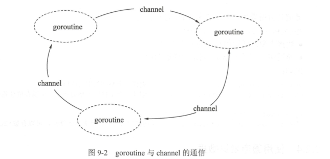

Contents
8.3. 03.通道(channel)-在多个goroutine间通信的管道¶
Go语言提倡使用通信的方法代替共享内存，这里通信的方法就是使用通道(channel).

在地铁站、食堂、洗手间等公共场所人很多的情况下，大家养成了排队的习惯，
目的也是避免拥挤、插队导致的低效的资源使用和交换过程。代码与数据也是如此，多个 goroutine 为了争抢数据，势必造成执行的低效率，使用队列的方式是最高效的，channel 就是一种队列一样的结构。
8.3.1. 通道的特性¶
Go语言中的通道（channel）是一种特殊的类型。在任何时候，同时只能有一个 goroutine 访问通道进行发送和获取数据。goroutine 间通过通道就可以通信。
通道像一个传送带或者队列，总是遵循先入先出（First In First Out）的规则，保证收发数据的顺序。
8.3.2. 声明通道类型¶
通道本身需要一个类型进行修饰，就像切片类型需要标识元素类型。通道的元素类型就是在其内部传输的数据类型，声明如下：
var 通道变量 chan 通道类型
·通道类型：通道内的数据类型。
·通道变量：保存通道的变量。
chan 类型的空值是 nil，声明后需要配合 make 后才能使用。
8.3.3. 创建通道¶
通道是引用类型，需要使用 make 进行创建，格式如下：
通道实例 := make(chan 数据类型)
· 数据类型：通道内传输的元素类型。
· 通道实例：通过make创建的通道句柄。
// 无缓冲的整型通道
unbuffered := make(chan int)
// 有缓冲的字符串通道
buffered := make(chan string, 10)
例子：
package main
import "fmt"
func main() {
ch1 := make(chan int)
ch2 := make(chan interface{})
type Equip struct{
name string
age int
}
ch3 := make(chan *Equip)
fmt.Printf("%#v\n",ch1) //(chan int)(0xc000012180)
fmt.Printf("%#v\n",ch2) //(chan interface {})(0xc0000121e0)
fmt.Printf("%#v\n",ch3) //(chan *main.Equip)(0xc000012240)
}
8.3.4. 使用通道发送数据¶
通道创建后，就可以使用通道进行发送和接收操作。
- 通道发送数据的格式 通道的发送使用特殊的操作符<-，将数据通过通道发送的格式为： ``` 通道变量 <- 值
· 通道变量：通过make创建好的通道实例。 · 值：可以是变量、常量、表达式或者函数返回值等。值的类型必须与ch通道的元素类型一致。 ```
- 通过通道发送数据的例子
使用 make 创建一个通道后，就可以使用<-向通道发送数据，代码如下：
// 创建一个空接口通道
ch := make(chan interface{})
// 将0放入通道中
ch <- 0
// 将hello字符串放入通道中
ch <- "hello"
3)发送将持续阻塞，直到数据被接收
把数据往通道中发送时，如果接收方一直都没有接收，那么发送操作将持续阻塞。Go 程序运行时能智能地发现一些永远无法发送成功的语句并做出提示，
package main
// 通过通道发送数据的例子
func main() {
// 创建一个整型通道
ch := make(chan int)
// 尝试将0通过通道发送
ch <- 0
}
/*
fatal error: all goroutines are asleep - deadlock!
*/
8.3.5. 使用通道接收数据¶
通道接收同样使用<-操作符，通道接收有如下特性：
① 通道的收发操作在不同的两个 goroutine 间进行。
由于通道的数据在没有接收方处理时，数据发送方会持续阻塞，因此通道的接收必定在另外一个 goroutine 中进行。
② 接收将持续阻塞直到发送方发送数据。
如果接收方接收时，通道中没有发送方发送数据，接收方也会发生阻塞，直到发送方发送数据为止。
③ 每次接收一个元素。
通道一次只能接收一个数据元素。
向通道发送值
// 有缓冲的字符串通道
buffered := make(chan string, 10)
// 通过通道发送一个字符串
buffered <- "Gopher"
从通道里接收值
// 从通道接收一个字符串
value := <-buffered
当从通道里接收一个值或者指针时，<-
运算符在要操作的通道变量的左侧。
使用通道做并发同步的写法如下：¶
package main
import "fmt"
// 通过通道发送、接收数据的例子
/*
通道的数据接收一共有以下 4 种写法
1.阻塞接收数据
data := <-ch
2.非阻塞接收数据
data, ok := <-ch
· data：表示接收到的数据。未接收到数据时，data 为通道类型的零值。
· ok：表示是否接收到数据。
3.接收任意数据，忽略接收的数据
<-ch
4. 循环接收
for data := range ch {
}
*/
func main() {
// 构建一个通道
ch :=make(chan int)
// 开启一个并发匿名函数
go func() {
fmt.Println("start gorutine")
// 通过通道通知main的goroutine
ch <- 0
fmt.Println("exit goroutine")
}()
fmt.Println("wait goroutine")
// 等待匿名goroutine
<-ch
fmt.Println("all done")
}
/*
wait goroutine
start gorutine
exit goroutine
all done
*/
遍历通道数据的例子请参考下面的代码。¶
package main
import (
"fmt"
"time"
)
func main() {
// 构建一个通道
ch := make(chan int)
// 开启一个并发匿名函数
go func() {
//从3循环到0
for i := 3; i >= 0; i-- {
// 发送3到0之间的数值
ch <- i
// 每次发送完时等待
time.Sleep(time.Second)
}
}()
// 遍历接收通道数据
for data := range ch {
//打印通道数据
fmt.Println(data)
//当遇到数据0时，退出接收循环
if data == 0 {
break
}
}
}
示例：并发打印¶
package main
import "fmt"
func printer(c chan int) {
// 开始无限循环等待数据
for {
// 从channel中获取一个数据
data := <-c
// 将0视为数据结束
if data == 0 {
break
}
// 打印数据
fmt.Println(data)
}
// 通知main已经结束循环 (我搞定了！)
c <- 0
}
func main() {
// 创建一个channel
c := make(chan int)
// 并发执行printer，传入channel
go printer(c)
for i := 1; i <= 10; i++ {
//将数据通过channel投送给printer
c <- i
}
// 通知并发的printer结束循环（没有数据啦！）
c <- 0
//等待printer结束（搞定喊我！）
<-c
}
/*
1
2
3
4
5
6
7
8
9
10
*/
示例，同时发送和接收(不带缓冲的通道)¶
package main
import (
"fmt"
"time"
)
/*
使用make来建立一个通道：
var channel chan int = make(chan int)
// 或
channel := make(chan int)
// 定义接收的channel
receive_only := make (<-chan int)
// 定义发送的channel
send_only := make (chan<- int)
// 可同时发送接收
send_receive := make (chan int)
· chan<- 表示数据进入通道，要把数据写进通道，对于调用者就是发送。
· <-chan 表示数据从通道出来，对于调用者就是得到通道的数据，当然就是接收。
定义只发送或只接收的channel意义不大，一般用于在参数传递中：
*/
func main() {
c := make(chan int) // 不使用带缓冲区的channel
go send(c)
go recv(c)
time.Sleep(3 * time.Second)
close(c)
}
// 只能向chan里send数据
func send(c chan<- int) {
for i := 0; i < 10; i++ {
fmt.Println("send readey", i)
c <- i
fmt.Println("send", i)
}
}
// 只能接收channel中的数据
func recv(c <-chan int) {
for i := range c{
fmt.Println("received", i)
}
}
/*
send readey 0
send 0
send readey 1
received 0
received 1
send 1
.....
....
*/